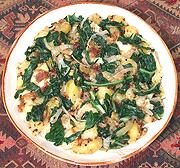

|
Potatoes & Spinach (or Chard)India - England - Aloo Saag | ||||
| Serves: Effort: Sched: DoAhead: |
4 side *** 1 hrs Part |
This recipe may have originated around Mumbai, but the region of India where it is now most popular is England. Cooking methods vary (see Note-4) but the ingredients remain pretty much the same. Chard was used for the photo. | |||
|
1-1/2 1 6 1 2 2 2/3 2 1-1/2 1 1/2 |
# # oz in cl t T T t t |
Potatoes (1) Spinach (2) Onions Ginger Garlic Chili, green (3) Salt Oil Oil (more) Mustard seeds Cumin seeds |
PREP - (20 min)
|
isv_potspin1 090411 var - www.clovegarden.com
©Andrew Grygus - agryg@aaxnet.com - Linking to and
non-commercial use of this page is permitted.